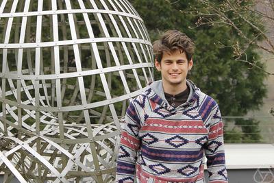
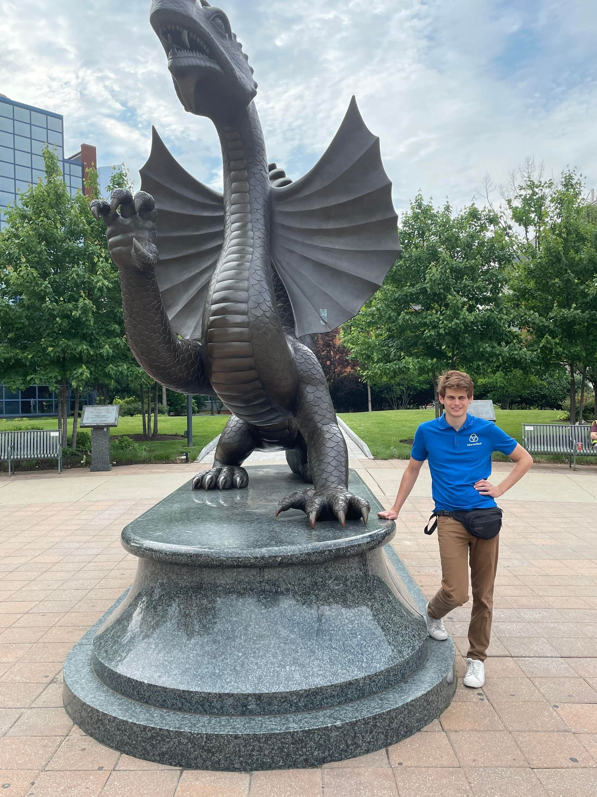
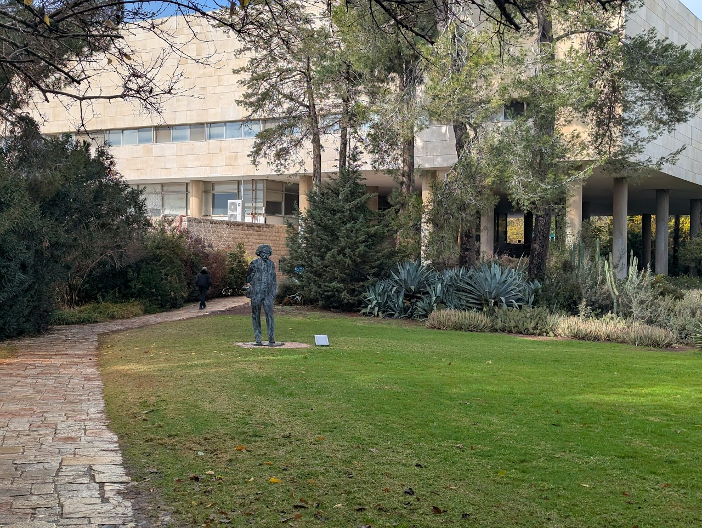
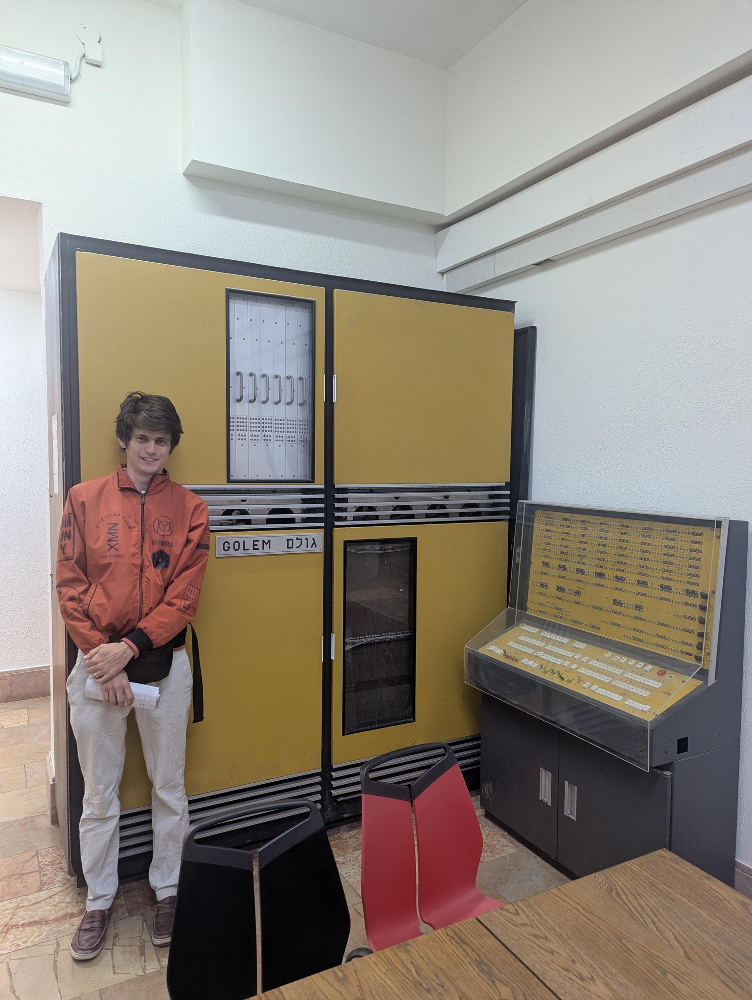
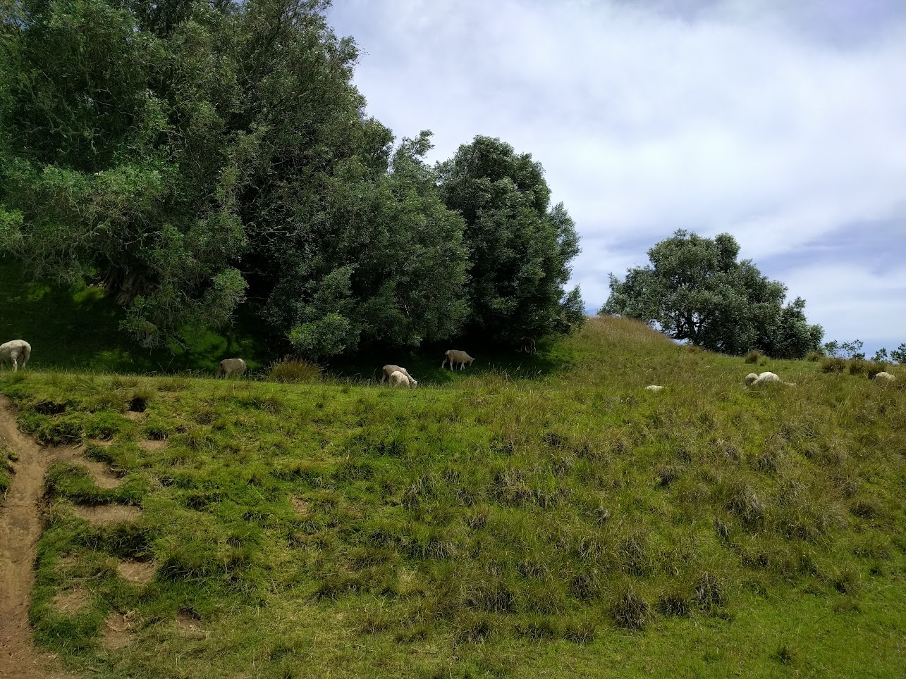

About me

I am an Assistant Professor of Mathematics at Drexel University (Fall 2022-Present).
Previously, I was an Assistant Professor at the University of Florida from 2018-2022. I was a National Science Foundation Mathematical Sciences Postdoctoral Research Fellow and William Chauvenet Postdoctoral Lecturer at Washington University in St. Louis (2015-2018).
I obtained my Ph.D. in Mathematics at the University of California, San Diego under Jim Agler in 2015. Prior to my Ph.D., I obtained an M.A. in Applied Math from UCSD in 2011, and my B.S. at the University of North Texas in 2010.
Email: jep362@drexel.edu
Research & Grants
Fields of Research Interest:
My research is predominantly in Hilbert space geometry and functional analysis.
Grants:
- "Local and algebraic phenomena in noncommutative function theory"
Binational Science Foundation Grant 2022235 (2024-present)
($172,899 USD, co-PI Eli Shamovich). This grant bridges the US and Israeli mathematical communities, funding deep structural investigations into the local behavior of noncommutative functions.
- "Matrix Analysis for the 21st Century"
National Science Foundation Grant DMS-1953963 (2020-2023) and DMS-2319010 (2023-2024)
Supporting foundational research in multivariable operator theory, free probability, and the geometry of polynomials.
- "The 38th Southeastern Analysis Meeting (SEAM)"
National Science Foundation Grant DMS-2154455 (2022-2023)
($33,400 USD, co-PIs Michael Jury and Scott McCullough). Facilitating the gathering and cross-pollination of regional and international analysts.
- National Science Foundation Mathematical Sciences Postdoctoral Research Fellow
DMS-1606260 (2016-2019)
Postdoctoral support hosted at Washington University in St. Louis under the mentorship of John McCarthy.
I recommend reading about complete discrete Schoenberg-Delsarte theory if you desire joy.

Games, Strategy & Outreach
Mathematical thinking extends beyond the chalkboard. It thrives in systems of incomplete information, strategic resource management, and community cross-pollination. Below are links to games I have developed, as well as resources for my favorite card game, Bridge.
Original Games
- Wolfjack: A variation on honeymoon spades. (Developed with Geoffrey Hutinet Pascoe.)
- Airport Game: A variation on Uno. (Developed with Corey Stone.)
We are deeply interested in any substantative contributions to the theory and strategy of these games, (not as played against the robots, but as a game itself.)
Bridge Resources
If you learn to play, you should find a bridge club. Often clubs enjoy having more junior volunteers to help set up and clean up.
Community Outreach
Teaching Bridge is a powerful mechanism for combating cognitive decline and social isolation in older adults.
Global Nodes & Mathematical Cross-Pollination
Mathematics thrives as a complete graph, requiring constant flow between disparate physical and intellectual nodes. Below are the regions where I have spent significant time developing operator theory, alongside curated funding mechanisms and the key human collaborations that anchor these local graphs.

Israel


New Zealand
Mathematics outside the world of forms
Mathematical progress is supported by a robust network. For each generation, new ideologies challenge our ability to constructively collaborate. Moreover massive amounts of mathematical talent goes underutilized due to the disregard and squabbles of the impure, as it were.
We wholeheartedly endorse the notion that no public-sector pure mathematicial contributions or collaborations should be rejected based upon the identity, deeds, (wicked or righteous) or beliefs (idiotic or profound) of the authors or the sponsors. Pure mathematics has no place in the often gangster world of politics and force, and vice versa. We strongly encourage mathematicians to cease such activities, to reject ideology, and to circumvent them by being the link between groups who have not reached a stage where they have the ability and will.
Mathematics saves lives.
We follow these axioms:
- To waste mathematical potential is morally wrong.
- Cultivation of pure mathematics is the fundamental human responsibility.
- Mathematics is not a tool.
- Every student deserves to maximize their mathematical potential.
Note that a whole economy must exist to support these axioms, everyone plays their part. Let us hope we all do it efficiently, so we get to enjoy the better theorems.
Prospective Graduate Students (PhD)
I am actively looking for motivated graduate students to join my research group at Drexel University. If you are interested in operator theory, noncommutative function theory, free probability, or related fields in analysis and algebra, I encourage you to apply to our PhD program.
- The Program: The Drexel Mathematics PhD program offers rigorous training and opportunities to engage in cutting-edge research in the heart of Philadelphia.
- Funding: Admitted PhD students are typically fully funded through Teaching Assistantships or Research Assistantships, which include a competitive stipend, full tuition remission, and a health insurance subsidy.
- How to Apply: You can find the formal application requirements, GRE/TOEFL details, and deadlines on the Drexel Graduate Admissions page.
- Contact Me: Before applying, I highly recommend reaching out to me via email (jep362@drexel.edu). Please include your CV and a brief description of your mathematical background and research interests so we can discuss potential alignment.
Journal Articles
- 1. J. E. Pascoe, Ryan Tully-Doyle. Matrix convex verbatim enumeration functions are graphical. J. Operator Theory.
- 2. J. E. Pascoe. The spectral constant for the quantum cross and asymptotics for annuli. Acta Sci. Math. (Szeged).
- 3. J. E. Pascoe. Noncommutative free universal mondromy, pluriharmonic conjugates and plurisubharmonicity. Trans. Amer. Math. Soc. (to appear).
- 4. J. E. Pascoe. The sequential compactness theorem in the strong operator topology modulo unitary conjugation. Oper. Theory 2025 (In Book).
- 5. Kelly Bickel, Greg Knese, J. E. Pascoe, Alan Sola. Stable polynomials and admissible numerators in product domains. Bull. Lond. Math. Soc. 57 (2) 377-394, 2025.
- 6. Kelly Bickel, Greg Knese, J. E. Pascoe, Alan Sola. Local theory of stable polynomials and bounded rational functions of several variables. Ann. Polon. Math. 133, 95-169, 2024.
- 7. J. E. Pascoe, Hugo Woerdeman. The degree one Laguerre-Pólya class and the shuffle-word-embedding conjecture. Canad. Math. Bull. 67 (3) 760-767, 2024.
- 8. Kelly Bickel, J. E. Pascoe, Meredith Sargent. Zero-free regions near a line. Math. Z. 305 (2023).
- 9. Scott McCullough, J. E. Pascoe. Geometric Dilations and Operator Annuli. J. Funct. Anal. 285 (2023) issue 7.
- 10. J. E. Pascoe. Invariant structure preserving functions and an Oka-Weil Kaplansky density type theorem. Tohoku Math. J. 75 (2023) no. 4.
- 11. Kelly Bickel, J. E. Pascoe, Ryan Tully-Doyle. Analytic continuation of concrete realizations and the McCarthy Champagne conjecture. Int. Math. Res. Not. IMRN 2023, no. 9, 7845-7882.
- 12. J. E. Pascoe, Ryan Tully-Doyle. Induced Stinespring factorization and the Wittstock support theorem. Results Math. 78 (2023), no. 4, Paper No. 135.
- 13. J. E. Pascoe, Ryan Tully-Doyle. The royal road to automatic noncommutative real analyticity, monotonicity, and convexity. Adv. Math. 407 (2022), Paper No. 108548.
- 14. Michael Jury, Igor Klep, Mark Mancuso, Scott McCullough, J. E. Pascoe. Noncommutative partially convex rational functions. Rev. Mat. Iberoam. 38 (2022), no. 3, 731-759.
- 15. Kelly Bickel, J. E. Pascoe, Alan Sola. Singularities of rational inner functions in higher dimensions. Amer. J. Math. 144 (2022), no. 4, 1115-1157.
- 16. J. E. Pascoe, Tapesh Yadav. Macroscale behavior of random lower triangular matrices. Anal. Math. Phys. 12 (2022), no. 1, Paper No. 12, 11 pp.
- 17. J. E. Pascoe, Ryan Tully-Doyle. Monotonicity of the principal pivot transform. Linear Algebra Appl. 643 (2022), 161-165.
- 18. J. E. Pascoe. The outer spectral radius and dynamics of completely positive maps. Israel J. Math. 244 (2021), no. 2, 945-969.
- 19. J. E. Pascoe, Meredith Sargent, Ryan Tully-Doyle. A controlled tangential Julia-Carathéodory theory via averaged Julia quotients. Anal. PDE 14 (2021), no. 6, 1773-1795.
- 20. Igor Klep, J. E. Pascoe, Jurij Volčič. Positive univariate trace polynomials. J. Algebra 579 (2021), 303-317.
- 21. Michael Jury, Igor Klep, Mark Mancuso, Scott McCullough, J. E. Pascoe. Noncommutative partial convexity via Γ-convexity. J. Geom. Anal. 31 (2021), no. 3, 3137-3160.
- 22. J. E. Pascoe, Ryan Tully-Doyle. Automatic real analyticity and a regal proof of a commutative multivariate Löwner theorem. Proc. Amer. Math. Soc., 149 (2021), 2019-2024.
- 23. J. E. Pascoe. Trace minmax functions and the radical Laguerre Pólya class. Res. Math. Sci. 8 (2021), no. 1, 9.
- 24. Kelly Bickel, J. E. Pascoe, Alan Sola. Level curve portaits of rational inner functions. Ann. Sc. Norm. Super. Pisa Cl. Sci., (2020) PP. 449-494 | Vol. XXI.
- 25. Meric Augat, Michael Jury, J. E. Pascoe. Effective noncommuative Nevanlinna-Pick interpolation on the row ball and applications. J. Math. Anal. Appl. 492 (2020), no. 2, 124457, 21 pp.
- 26. Igor Klep, J. E. Pascoe, Gregor Podlogar and Jurij Volčič. Noncommutative rational functions invariant under the action of a finite solvable group. J. Math. Anal. Appl. 490 (2020), no. 2, 124341, 17 pp.
- 27. J. E. Pascoe. An entire free holomorphic function which is unbounded on the row ball. J. Operator Theory, 84 (2020), no. 2, 365-367.
- 28. J. E. Pascoe. Committee spaces and the random column-row property. Complex Anal. Oper. Theory 14 Paper No. 13. (2020).
- 29. J. E. Pascoe, Benjamin Passer, Ryan Tully-Doyle. Representation of free Herglotz functions. Indiana Univ. Math. J. 68 No. 4 (2019), 1199-1215.
- 30. J. E. Pascoe. The wedge-of-the-edge theorem: edge-of-the-wedge type phenomenon within the common real boundary. Canad. Math. Bull. 62 (2019), no. 2, 417-427.
- 31. J. E. Pascoe. An elementary method to compute the algebra generated by some given matrices. Linear Algebra Appl. 571 (2019), 132-142.
- 32. J. E. Pascoe. Note on Löwner's theorem on matrix monotone functions in several commuting variables of Agler, McCarthy and Young. Monatsh. Math. 189 no. 2 (2019), 377-381.
- 33. J. E. Pascoe, Ryan Tully-Doyle. Cauchy transforms arising from homomorphic conditional expectations parametrize free Pick functions. J. Math. Anal. Appl. 472 (2) 2019. 1487-1498.
- 34. J. E. Pascoe. An inductive Julia-Carathéodory theorem for Pick functions in two variables. Proc. Edinb. Math. Soc., (2) 61 (2018), no. 3. 647-660.
- 35. David Cushing, J. E. Pascoe, Ryan Tully-Doyle. Free functions with symmetry. Math. Z., 289 (2018), no. 3-4, 837-857.
- 36. Kelly Bickel, J. E. Pascoe, Alan Sola. Derivatives of rational inner functions: geometry of singularities and integrability at the boundary. Proc. Lond. Math. Soc., 116 (2) 281-329 (2018).
- 37. J. E. Pascoe. The noncommutative Löwner theorem for matrix monotone functions over operator systems. Linear Algebra Appl. 541 (2018) 54-59.
- 38. J. E. Pascoe. Positivstellensätze for noncommutative rational expressions. Proc. Amer. Math. Soc., 146 (2018) 933-937.
- 39. John E. McCarthy, J. E. Pascoe. A non-commutative Julia Inequality. Math. Ann., 370 (1-2) 423-446, 2018.
- 40. J. E. Pascoe. A wedge-of-the-edge theorem: analytic continuation of multivariable Pick functions in and around the boundary. Bull. Lond. Math. Soc., 49 (5) 916-945, 2017.
- 41. J. E. Pascoe, Ryan Tully-Doyle. Free Pick functions: representations, asymptotic behavior and matrix monotonicity in several noncommuting variables. J. Funct. Anal., 273 (1) 283-328 (2017).
- 42. John McCarthy, J. E. Pascoe. The Julia-Carathéodory theorem on the bidisk revisited. Acta Sci. Math. (Szeged), 83:1-2, 165-175, 2017.
- 43. Igor Klep, J. E. Pascoe, Jurij Volčič. Regular and positive noncommutative rational functions. J. Lond. Math. Soc., 95 (2) 613-632, 2017.
- 44. J. William Helton, J. E. Pascoe, Ryan Tully-Doyle, Victor Vinnikov. Convex entire noncommutative functions are polynomials of degree two or less. Integral Equations Operator Theory, 86 (2), 151-163, 2016.
- 45. J. E. Pascoe. The inverse function theorem and the Jacobian conjecture for free analysis. Math. Z., 278 (3-4) 987-994, 2014.
Preprints
- Sujit Sakharam Damase, J. E. Pascoe. On positive definite thresholding of correlation matrices. preprint.
- Greg Knese, J. E. Pascoe, Alan Sola. Stable polynomials and bounded rational functions in the unit ball. preprint.
- Sujit Sakharam Damase, J. E. Pascoe. Complete discrete Schoenberg-Delsarte theory for homogeneous spaces. preprint.
- Sourav Pal, J. E. Pascoe, Nitin Tomar. Spectral constants for the quantum annulus. preprint.
- Geoffrey Hutinet, J. E. Pascoe. Indices of quadratic programs over reproducing kernel Hilbert spaces for fun and profit. preprint.
- Michael Coopman, Austin Jacobs, H. B. Pascoe, J. E. Pascoe. The geometry of inconvenience and perverse equilibria in trade networks. preprint.
- J. E. Pascoe. Germination phenomena. preprint.
- J. E. Pascoe, Ryan Tully-Doyle. Averaged mixed Julia-Fatou type theory with applications to spectral foliation. preprint.
- J. E. Pascoe. Free noncommutative principal divisors and commutativity of the tracial fundamental group. preprint.
- J. E. Pascoe. Noncommutative Schur-type products and their Schoenberg theorem. in revision.
Presentations & Slides
Colloquia and Lecture Series
- "Constrained sphere packing and the interpolation problem for positive definite functions", Midrash, Weizmann Insitute
- "Universality of the Schur Complement", Ashoka University, Summer 2025
- "Dilation theory and applications" Indian Statistical Institute, Delhi, Summer 2025
- "Kernel embeddings and Herglotz duality" University of Delhi, South Campus, Summer 2025
- "Reproducing Kernel Hibert Spaces and their applications", Ramjas College, Summer 2025
- "Reproducing Kernel Hibert Spaces and Dynamical Systems", St Thomas University, Bangalore, Summer 2025
- "Matrix convex functions" IIT Bombay, Summer 2025
- "Geometric aspects of kernel embeddings" Eigenfunctions seminar, Indian Institute of Science, Bangalore, Summer 2025
- "Geometric aspects of kernel embeddings" Cochin University of Science and Technology, July 2025
- "Geometric dilation and the quantum annulus." Colloquium, Drexel, January 2022
- "The Jacobian conjecture in noncommuting variables and free universal monodromy." REU Colloquium, University of Tennessee, Chattanooga, Summer 2021
- "The tracial fundamental group." Colloquium, University of Ljubljana, Fall 2020.
- "Monodromy and logarithms of nonsingular matrix-valued functions." Distinguished Visiting Professor Lecture Series, Bucknell, March 2020
- "Manipulating matrix inequalities." Colloquium, University of Florida, Fall 2018.
- "The wedge-of-the-edge theorem." Distinguished Visiting Professor Lecture Series, Bucknell, October 2017.
- "Real algebraic geometry and matrix inequalities." Distinguished Visiting Professor Lecture Series, Bucknell, October 2017.
- "Free functions with Symmetry." Colloquium, University of Florida, Fall 2016.
Long Invited Talks
- "Constrained sphere packing and the interpolation problem for positive definite functions", Tsinghua Mathematical Forum, December 2025
- "The free functional calculus", SLMath, Revisiting Fundamental Problems Workshop: Infinite-Dimensional Division Algebras Algebraicity and Freeness December 2025
- "Spectral constants and dilation theory" at Operator Analyis on Function Spaces conference in Winnipeg June 2025
- "Beyond physical maze solvers via modern portfolio theory" IPAM Mathematics of Intelligences Fall 2024
- "Indices for quadratic programs for fun and profit" at MFO workshop "Non-commutative Function Theory and Free Probability" May 2, 2024
- "Indices for kernel embeddings" at Stockholm University Analysis Seminar May 8, 2024
- "Indices of quadratic programs over reproducing kernel Hilbert spaces for fun and profit" Spaces of Analytic Functions and their Operators Conference at Saarbrucken May 16, 2024
- "Abstract preservers" University of Delaware Analysis Seminar 2023 Spring
- "The radical Laguerre Pólya class" Oberwolfach March 2022.
- "Abstract preservers" ICMS Workshop on Applied Positivity (2021)
- "Free convexity, plurisubharmonicity, and universal monodromy" AIM workshop on Noncommutative Inequalities (2021)
- "Trace minmax functions and the radical Laguerre-Pólya class" Clemson Analysis Seminar (Feb 2021)
- "The tracial fundamental group" 2TART Seminar series (2020)
- "Trace minmax functions and the radical Laguerre-Pólya class" 2TART: OTWIA (2020)
- "Free convexity, plurisubharmonicity, and universal monodromy" Saarbrucken Analysis Seminar (2020)
- "The royal road to the multivariate Löwner theorem" Stockholm University Analysis seminar (2019)
- "The failure of the column-row property in the Fock space." Focus Program on Applications of Noncommutative Function Theory, Fields Institute, June 2019.
- "Noncommutative Positivstellensätze." Wabash Miniconference, September 2017.
- "Regular and positive noncommutative rational functions." Iowa 2016 Workshop on Noncommutative Analysis.
- "Monotonicity in free analysis." JMM 2016, Special Session on Advances in Free Analysis.
- "Representation formulas for Pick functions in two complex variables and free function theory." Free Stochastic Analysis Mini-Workshop, Saarbrucken.
Further Invited Talks
- "The spectral constant for the Quantum Cross" IWOTA 2025
- "Boundary behavior for embedded distributions for fun and profit" Multivariable Operator Theory Conference 2024 June 10, 2024
- "Payoff minus half normed squared optimization problems" JMM 2024 special session
- "Germination Phenomena" Drexel Analysis seminar
- "Abstract Presevers" IWOTA 2020 (in 2021)
- "Realizations for special classes of noncommutative functions" IWOTA 2021
- "Algebraic geometry and topology arising from tracial and determinantal free noncommutative functions" JMM 2021
- "Advances in realization theory for special classes of noncommutative functions" JMM 2020
- "The column-row property fails for the multipliers of the Fock space" IWOTA 2019
- "Noncommutative positivity preserving products and their Schoenberg type theory" ILAS 2019, July 12, 2019
- "Computing matrix algebra dimension and other exotic applications of the Pick matrix" ILAS 2019, July 8, 2019
- "Calculating algebra dimension and other exotic applications of the Pick matrix." SEAM 2019, Alabama.
- "Geometric aspects of the Julia quotient on sets with controlled tangential approach." AMS Sectional 2018
- "Monotone maps for manipulating matrix inequalities." IWOTA 2018. Shanghai, China.
- "Monotone maps for manipulating matrix inequalities." MTNS 2018. Hong Kong.
- "Invariant theory for non-commutative functions and applications." JMM 2018, San Diego.
- "Applications of model- realization theory to inverse problems in free probability." Mathematical Congress of the Americas, 2017.
- "Applications of model- realization theory to inverse problems in free probability." JMM 2017.
- "Matrix monotonicity in several variables." Semi-plenary, Southeastern Analysis Meeting (SEAM) 2016.
- "Matrix monotonicity in several variables." IWOTA 2016.
- "Matrix monotonicity in several variables." MTNS 2016.
- "Free functions with Symmetry." San Antonio, JMM 2015.
- "Using operator theory to measure the asymptotic behavior of Pick functions in two variables at infinity." San Antonio, JMM 2015.
- "A wedge of the edge of the wedge." ICMS Workshop 2014.
- "Matrix monotonicity in several noncommuting variables." JMM 2014.
- "Matrix monotonicity in several noncommuting variables." St. Louis AMS Sectional Meeting, Fall 2013.
Invited Seminar Talks
- "The tracial fundamental group and free universal monodromy" CMSA Seminar, Harvard, January 2026
- "Constrained sphere packing and the interpolation problem for positive definite functions", Israel Noncommutative Analysis Seminar, Technion, December 2025
- "Constrained sphere packing and the interpolation problem for positive definite functions", Ben Gurion University seminar, December 2025
- "Geometric aspects of rational inner function membership in function spaces." Linear Analysis seminar TAMU Spring 2017.
- "The Julia-Carathéodory theorem on the bidisk and the bi-upper half plane." Seminar at University of Auckland, February 2017.
- "The Julia-Carathéodory theorem on the bidisk." Seminar, University of Florida, Fall 2016.
- "Matrix monotone functions in one and several variables." TAMU Linear Analysis Seminar, October 24, 2014.
Other Talks
- "Matrix convex verbatim enumeration functions are graphical" Oct 20 and 27 Drexel Analysis Seminar
- "Positivstellensätze for noncommutative rational functions." Sums of Squares: Real Algebraic Geometry and its Applications, Innsbruck, August 2017.
- "Geometric aspects of rational inner function membership in function spaces." WashU Analysis Seminar Spring 2017.
- "Positive noncommutative rational functions." Analysis Seminar WashU Spring 2016.
- "Hankel Vector Moment Sequences." Analysis Seminar WashU Fall 2015.
- "Hankel vector moment sequences." GPOTS 2014.
- "Injective free polynomials." Hilbert Function Spaces 2013.
- "Boundary approximation and interpolation of Pick functions." Advancement to Candidacy 2013.
- "The Pick problem." Food for Thought 2013.
- "The Hamburger moment problem." Food for Thought 2012.
Coauthors & Collaborators
A mathematical career is defined by its human edges. The links below utilize a dynamic routing protocol (bypassing the inevitable decay of static URLs) to resolve directly to each mathematician's current active homepage.